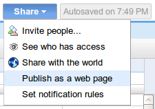
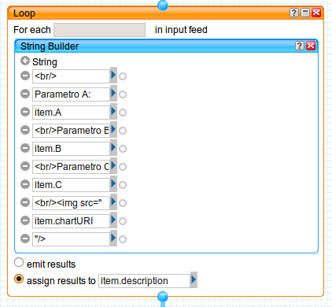
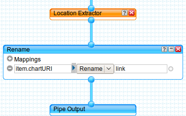

10 agosto, 2009 | di Pietro Blu Giandonato
Era un pezzo che desideravo sperimentare Yahoo Pipes , dopo esserne venuto a conoscenza grazie ad Andrea (ricorderete il suo precedente geniale post). In effetti ho giocato d’anticipo proprio su di lui, per cimentarmi a produrre un GeoRSS in puro stile web 2.0.
Non ho certo intenzione di mettermi qui a tessere le lodi di Pipes, sebbene a mio avviso non se ne parli mai abbastanza. Voglio solo ribadire che si tratta di uno strumento web 2.0 dalle potenzialità pressoché infinite, che aumentano esponenzialmente in funzione della crescente messe di risorse e fonti di dati disponibili sul web. A patto che, inutile dirlo, lo siano secondo standard aperti, come già Andrea ha molto ben sottolineato proprio nel suo citato articolo.
Passiamo ai fatti.
Un item GeoRSS, nella codifica W3C ha la seguente struttura:
<?xml version=\"1.0\"?>
<?xml-stylesheet href=\"/eqcenter/catalogs/rssxsl.php?feed=eqs7day-M5.xml\" type=\"text/xsl\"
media=\"screen\"?>
<rss version=\"2.0\"
xmlns:geo=\"http://www.w3.org/2003/01/geo/wgs84_pos#\"
xmlns:dc=\"http://purl.org/dc/elements/1.1/\">
<channel>
<title>USGS M5+ Earthquakes</title>
<description>Real-time, worldwide earthquake list for the past 7 days</description>
<link>http://earthquake.usgs.gov/eqcenter/</link>
<dc:publisher>U.S. Geological Survey</dc:publisher>
<pubDate>Thu, 27 Dec 2007 23:56:15 PST</pubDate>
<item> <pubDate>Fri, 28 Dec 2007 05:24:17 GMT</pubDate> <title>M 5.3, northern Sumatra, Indonesia</title> <description>December 28, 2007 05:24:17 GMT</description> <link>http://earthquake.usgs.gov/eqcenter/recenteqsww/Quakes/us2007llai.php</link> <geo:lat>5.5319</geo:lat> <geo:long>95.8972</geo:long> </item>
</channel>
</rss>
L’obiettivo è costruire un GeoRSS a partire da una fonte di dati che viene aggiornata in tempo reale, nella fattispecie – e tanto per essere originali – l’elenco dei terremoti rilevati dal Centro Nazionale Terremoti dell’INGV, sul cui sito vedrete una pagina html con tutti gli ultimi eventi rilevati.
Per il nostro lavoro utilizzeremo sempre le stesse informazioni, ma in formato standard CSV – disponibili qui – dunque perfettamente importabili pressochè ovunque. Vediamone i contenuti:
- Lat – la latitudine dell’evento in gradi decimali;
- Lon – la longitudine dell’evento in gradi decimali;
- Depth – la profondità dell’ipocentro in km;
- UTC_Date – il momento temporale nel quale l’evento è stato registrato;
- Magnitude – la magnitudine Richter dell’evento;
- Locality – il distretto sismico nel quale è avvenuto il terremoto;
- Code – un codice univoco relativo all’evento;
- Query_Time – il tempo di query del file CSV, corrispondente a quello di caricamento della pagina del sito INGV.
In Pipes, il primo passo consiste nell’andare a recuperare (fetch) la fonte dei dati (il file CSV) per poterne poi utilizzare il contenuto. Verrà utilizzato il modulo “Fetch CSV” nel quale andremo ad inserire l’URL del CSV, usando la prima riga come intestazione delle colonne.
 Per poter generare il GeoRSS, Pipes deve “vedere” nei dati recuperati elementi che siano chiaramente riferibili a una coppia di coordinate, pertanto rinomineremo i campi “Lat” e “Lon” del CSV nei prosaici “Latitude” e “Longitude” mediante il modulo “Rename”.
Per poter generare il GeoRSS, Pipes deve “vedere” nei dati recuperati elementi che siano chiaramente riferibili a una coppia di coordinate, pertanto rinomineremo i campi “Lat” e “Lon” del CSV nei prosaici “Latitude” e “Longitude” mediante il modulo “Rename”.
 Lo standard GeoRSS prevede alcuni item che consentono di arricchire di informazioni descrittive ogni elemento geotaggato, poi visibili nel “balloon” ad esso associato in fase di visualizzazione su mappa.
Lo standard GeoRSS prevede alcuni item che consentono di arricchire di informazioni descrittive ogni elemento geotaggato, poi visibili nel “balloon” ad esso associato in fase di visualizzazione su mappa.
Naturalmente si tratta di informazioni residenti nel CSV, che noi andremo opportunamente a rinominare in modo da consentire a Pipes di includerle nel singolo elemento del GeoRSS. Si tratta essenzialmente di:
- <title> – il titolo dell’elemento, in questo caso il distretto sismico nel quale è avvenuto l’evento;
- <link> – l’URL alla risorsa associata all’elemento, ovvero la pagina dedicata al singolo evento sismico, realizzata dall’INGV;
- <description> – la descrizione dell’elemento, con la magnitudine, la profondità dell’ipocentro e la data del terremoto.
Passeremo queste informazioni al Pipe semplicemente usando sempre il modulo “Rename” avendo stavolta l’accortezza di scegliere l’opzione “Copy As”.
Qui sopra per <title>, con la necessità di sostituire l’antiestetico underscore presente nel campo “Locality” del CSV con uno spazio vuoto (blank) grazie al modulo “Regex”.
La <description> dell’elemento geotaggato come già detto è costituita da magnitudine, profondità dell’ipocentro e data dell’evento sismico, informazioni presenti in tre differenti campi del CSV, che andremo a comporre in un’unica stringa grazie al modulo “String Builder”. Questo verrà utilizzato però nell’ambito di un modulo “Loop”, poichè è un’operazione che va ripetuta per ogni elemento presente nel CSV.

Notate come il risultato dello String Builder vada ad essere assegnato all’item <description>.
L’INGV, per ogni evento sismico registrato, genera una pagina html che riporta informazioni estremamente dettagliate riguardanti il terremoto, molto preziose per chi si occupa di sismologia, di protezione civile o comunque davvero interessanti anche a scopo didattico. Qui quella relativa al famigerato evento del 6 aprile scorso che ha devastato l’Aquilano.
Osservando l’URL si nota che la stringa risulta la seguente:
http://cnt.rm.ingv.it/data_id/[codice evento]/event.html
dunque ciò che cambia è il codice evento, registrato nel campo “Code” del CSV. Ancora una volta, useremo la combinazione dei moduli “Loop” e “String Builder” per costruire il link alla pagina di ogni evento, assegnando il risultato all’item “eventoURL” che verrà poi rinominato nell’item <link>.
 Dulcis in fundo… il modulo che genera il vero e proprio GeoRSS… voilà, si tratta di “Location Extractor”.
Dulcis in fundo… il modulo che genera il vero e proprio GeoRSS… voilà, si tratta di “Location Extractor”.
 Voi direte: “embè, e i parametri dove sono?!?”. E’ quel che mi son chiesto anch’io quando l’ho visto. Ma poi leggendo la descrizione del modulo (cosa che vi consiglio vivamente di fare), si capisce come funziona:
Voi direte: “embè, e i parametri dove sono?!?”. E’ quel che mi son chiesto anch’io quando l’ho visto. Ma poi leggendo la descrizione del modulo (cosa che vi consiglio vivamente di fare), si capisce come funziona:
Questo modulo esamina il feed in input, alla ricerca di informazioni che indichino una località geografica. Se trova dati geografici, il modulo crea una y:location che costituisce l’elemento di output. Questo contiene svariati sotto-elementi, in funzione del feed di input.
Dunque fa tutto lui. In pasto possiamo dargli sorgenti GML, W3C Basic Geo, tags KML e ovviamente GeoRSS, in output fornirà appunto l’elemento y:location, che potrà essere visualizzato direttamente su una mappa interattiva Yahoo Map. Qui sotto il risultato…
Ma il vero valore aggiunto del pipe è quello di poter essere impiegato in svariati modi, dal “banale” embedding della mappa in blog e siti web, per finire ad altri davvero potentissimi, riutilizzabili in una miriade di modalità. Solo per citarne alcuni JSON, PHP, KML e ovviamente GeoRSS.

E proprio il GeoRSS può essere usato ad esempio con OpenLayers, scrivendo un pò di codice html è possibile in pochi minuti importare il feed generato dal pipe come layer grazie alla call OpenLayers.Layer.GeoRSS ottenendo una mappa semplice ma efficace, come si vede in questo esempio… Altre modalità di fruizione del GeoRSS – generate sempre in modo automatico – le riporto qui appresso giusto per coloro che non hanno voglia di andare a consultare la pagina del pipe:
Insomma, a noi Yahoo Pipes ci fa letteralmente sognare… Perchè sapere di avere uno strumento col quale poter attingere, trasformare, plasmare e “ricablare il web” (il loro slogan) e i dati sparsi per il mondo usando la logica ad oggetti, dedicando i propri neuroni solo ed esclusivamente alle idee e al modo di tradurle in fatti… beh, è davvero troppo, troppo entusiasmante.
E allora “Yes, we Pipe!”… ma prima ancora “Linked Data… now!!!”.
Posted in Didattica | 4 Comments »
16 marzo, 2009 | di Andrea Borruso
In questo post vi mostrerò come creare una sorgente geoRSS a partire da un file CSV che ho creato per l’occasione. Questo contiene dei dati fittizi su tre città italiane, che voglio pubblicare all’interno della sorgente geoRSS, curandone struttura e formattazione, ed inserendo anche un grafico di sintesi dei parametri presenti in ogni record.
Realizzerò il tutto creando un piccolo mashup sfruttando i seguenti servizi:
- Google Docs, per l’archiviazione dei dati grezzi e per la creazione del CSV a partire da questi
- Yahoo! Pipes, per l’elaborazione del file CSV e la sua trasformazione in geoRSS
- le api di Google Charts, per inserire nella sorgente geoRSS dei grafici di sintesi sui dati contenuti nel file CSV
- Google maps per visualizzare la sorgente geoRSS in una mappa
Un mashup è un’applicazione che, a partire da dati ed informazioni provenienti da due o più fonti/servizi/applicazioni, crea nuove applicazioni/servizi.
Google Docs
Ho creato in Google Docs un nuovo foglio elettronico ed ho inserito dei dati fittizi su tre città italiane. Ho anche aggiunto una colonna per il valore di latitudine, ed una per quello di longitudine (entrambi espressi i gradi decimali).

Per fare dialogare questo foglio elettronico con gli altri servizi citati sopra, dovrò renderlo pubblico; lo farò utilizzando il tasto Share e selezionando l’opzione “Publish as a web page” (così come nella figura sottostante).

Si aprirà una finestra di pop-up e dovrò cliccare su “Publish now“. Fatto questo, cliccherò sul link (presente in basso) “More publishing options“; si aprirà un’altra finestra di pop-up in cui sceglierò CSV come formato di pubblicazione e cliccherò sul tasto “Generate URL”. In ultimo copierò l’URL appena generato e lo incollerò da qualche parte (in un editor di testo).
Yahoo! Pipes e Google Charts
Yahoo! Pipes è il mio editor/cratore di mashup preferito. “Si presenta” ufficialmente così:
Pipes is a powerful composition tool to aggregate, manipulate, and mashup content from around the web.
Con Pipes aggrego ad esempio i feed RSS che pubblico in Blog GIS Italia, ma qui lo utilizzerò in modo diverso.
La prima cosa da fare in Pipes è scegliere la fonte dei nostri dati (possono essere anche più d’una), e in questo caso sceglierò il file CSV di cui sopra; ne andrò a recuperare l’URL e lo incollerò dentro il modulo di Pipes “Fetch CSV”.

Posso personalizzare diverse parametri. In questo caso ho escluso dalla lettura dei dati la prima riga (contiene i nomi delle colonne), ed ho impostato a mano i nomi delle colonne della mia tabella.
A questo modulo, ne collego un altro che trovo tra gli operatori di Pipes: “Rename”.

In questo modo rinominerò il campo “Citta” in “title”, in modo da avere a disposizione uno dei campi necessari per la creazione di una sorgente RSS.
Eseguirò successivamente il primo di due loop presenti in questo Pipe. Per ogni record della tabella andrò a “costruire” l’URL che mi consentirà di creare un grafico tramite le API di Google Charts. La struttura di base dell’URL per la generazione di un grafico tramite queste API è come quella sottostante:
 http://chart.apis.google.com/chart?
chs=250x100
&chd=t:60,40
&cht=p3
&chl=Hello|World
http://chart.apis.google.com/chart?
chs=250x100
&chd=t:60,40
&cht=p3
&chl=Hello|World
Dove:
- http://chart.apis.google.com/chart? è l’URL di base delle API.
- & è il separatore dei parametri
- chs=250×100 è la larghezza dei grafici in pixel.
- chd=t:60,40 sono i dati che voglio rappresentare.
- cht=p3 è il tipo di grafico.
- chl=Hello|World sono le etichette del grafico.
Dovrò adattare questo schema ai miei dati, per struttura, valori e formattazione.
Inserirò allora nel modulo “Loop” di Pipes un costruttore di stringhe – il modulo “String Builder” – con cui genererò un URL utile per la stampa a video di un grafico a torta per ogni record della mia tabella.

Assegnerò i valori di output di questo loop alla variabile “item.chartURI”. Per il primo record verrà generato ad esempio questo URL:
\"http://chart.apis.google.com/chart?cht=p3&chd=t:32,32,34&chl=Parametro
A|Parametro B|Parametro C&chs=450x200&chtt=Reggio Calabria\"
Utilizzerò il modulo “Regex” per fare sì che gli URL generati abbiano una corretta sintassi. Rimuoverò quindi gli spazi e li sostituirò con la stringa “%20″

Utilizzerò adesso il secondo modulo di “Loop”, per generare il contenuto del secondo elemento necessario in una sorgente RSS: il campo “descritpion“. Lo riempirò con delle stringhe di testo con i valori delle colonne che rappresenterò tramite grafico, e con il grafico stesso. Questo per ogni record della tabella.
Posso inserire qualsiasi stringa HTML che sia utile a formattare al meglio gli elementi del mio RSS. Il grafico verrà inserito in corrispondenza del tag <img>, che avrà come source proprio l’URL generato nel primo loop.

Infine:
- userò il modulo “Location Extractor” per trasformare un normale RSS in un geoRSS
- mapperò il campo “link” della sorgente RSS affinché punti al grafico generato
- genererò l’output

Il modulo “Location Extractor” non richiede informazioni aggiuntive, perché sfrutta due colonne presenti nel mio file CSV originario: “Latitude” e “Longitude”. In questo modo ogni elemento del mio RSS sarà geotaggato.
Non mi resta che salvare il mio Pipe cliccando sul tasto “Save”, e provarlo. Per vederlo in azione cliccherò sul link “Run pipe“, visibile nella zona in alto al centro della finestra di editing del Pipe. Si aprirà una pagina come quella sottostante.

Da questavisualizzerò gli elementi della mia sorgente RSS. Nel caso di una fonte geoRSS verrà generata automaticamente una mappa, che potrò inserire in una qualsiasi pagina html (copiando il codice che mi verrà restituito al click sul tasto “Get as a Badge“). Qui sotto vedete il tutto in azione.
Questi alcuni degli altri output possibili:
Google Maps
Due degli output di sopra, RSS e KML, possono essere visualizzati in un istante ed in modo molto efficace in Google Maps.
Basterà incollare uno dei due URL di sopra (RSS o KML) dentro il box di ricerca di Google Maps, e fare click sul tasto di ricerca.

Qui i due risultati in azione:
E’ possibile ottenere questo risultato con (quasi) qualsiasi URL di file KML o sorgenti RSS che siano geroRSS.
Considerazioni finali
Questo post è quasi la traduzione di quest’altro pubblicato su uno dei Blog che mi solletica di più in questo momento: OUseful.Info. Leggerlo è stato divertente, ma lo è stato molto di più mettere in pratica quanto descritto. Quello che vorrei trasmettervi è l’importanza del “fare”: si comprendono i concetti in modo più profondo, ed escono fuori molte più idee.
Quello che mi stupisce sempre è qualità, la varietà, e la “potenza” degli strumenti che abbiamo a disposizione. L’esempio descritto in questo post è semplice, e mentre lo scrivevo mi rendevo conto che con un po’ di fantasia ed ingegno si potrebbero ottenere risultati sorprendenti.
Per utilizzare Yahoo! Pipes è necessario avere un account Yahoo!. Qui il Pipe che ho realizzato, che potrete clonare ed adattare alle vostre “vere” esigenze.
Sitografia letta, consigliata e disordinata
- “Chart Types – Google Chart API – Google Code,” http://code.google.com/intl/it/apis/chart/types.html.
- “Creating Google Charts From CSV Data Inside a Yahoo Pipe « OUseful.Info, the blog…,” http://ouseful.wordpress.com/2009/03/12/creating-google-charts-from-csv-data-inside-a-yahoo-pipe/.
- “GeoRSS – Wikipedia, the free encyclopedia,” http://en.wikipedia.org/wiki/GeoRSS.
- “The scripting library: Combining data and information in the library,” http://www.slideshare.net/bonaria/the-scripting-library-combining-data-and-information-in-the-library.
- “Technical Overview: GeoRSS,” http://www.geowebguru.com/articles/108-technical-overview-georss.
Posted in Didattica, osgeo | 8 Comments »
20 giugno, 2007 | di Andrea Borruso
Sul Blog degli sviluppatori di GeoServer c’è una gran notizia: la futura release di GeoServer, la 1.5.2, supporterà il formato GeoRSS come output. E’ una gran cosa, in quando renderà la pubblicazione di basi dati sul web una cosa banale; basterà ad esempio sfruttare le funzioni native di lettura di file GeoRSS di Yahoo! Maps, Google Maps e Microsoft Virtual Earth.
Qui i dettagli tecnici.
Posted in News | No Comments »
5 aprile, 2007 | di Andrea Borruso
Ecco l’ennesimo prodotto di costruzione di mappe online: Google My Maps. Ve lo trovate andando su Google Maps, sulla sinistra. Cliccate sul tab “My Maps” e cliccate su “Create new map”.
Vi troverete davanti un editor cartografico online, che vi darà la possibilità di aggiungere punti, linee e poligoni, di formattarli (con una buona scelta di opzioni) e di arrichirli con informazioni ipertestuali (testi, foto, video, etc.). Per l’integrazione di queste informazioni è stato messo a disposizione un editor di testo utilizzabile sia in modalità WYSIWYG, che in semplice modalità testuale.
Le mappe create si possono ovviamente salvare e condividere con altri. E’ altresì possibile esportarne il contenuto in formato .kml (Google Earth).
E’ un peccato che non ci sia la possibilità di inserire le mappe create, all’interno del proprio sito e/o blog; a questo proposito Tagzania è uno strumento più raffinato che vi da anche la possibilità di esportare la mappa creata in formato GEORSS.
Ecco alcuni esempi (via official Google Blog):
Buon divertimento!
Posted in News | No Comments »
23 marzo, 2007 | di Andrea Borruso
Da ieri è possibile visualizzare sorgenti GeoRRS (sono feed RSS con informazioni geografiche sugli elementi del feed) in Google Maps. E’ una bella novità che si aggiunge alla possibilità di visualizzare file .kml e .kmz in Google Maps, in un momento in cui è sempre più diffuso integrare l’informazione geografica alle fonti di dati: si parla di geotagging.
Non rimane che sperimentare un po’. Ecco i passi da seguire:
- reperire una fonte GeoRSS
- inserire l’URL del feed nella casella di testo per eseguire le ricerche in Google Maps ed avviare la ricerca
- eccovi mappata su Google Maps la fonte GeoRSS che avete scelto
Guardate ad esempio le ultime notizie della Reuters su Google Maps, o le condizioni meteo di alcune città italiane.
Posted in News | 6 Comments »


 Per poter generare il GeoRSS, Pipes deve “vedere” nei dati recuperati elementi che siano chiaramente riferibili a una coppia di coordinate, pertanto rinomineremo i campi “Lat” e “Lon” del CSV nei prosaici “Latitude” e “Longitude” mediante il modulo “Rename”.
Per poter generare il GeoRSS, Pipes deve “vedere” nei dati recuperati elementi che siano chiaramente riferibili a una coppia di coordinate, pertanto rinomineremo i campi “Lat” e “Lon” del CSV nei prosaici “Latitude” e “Longitude” mediante il modulo “Rename”. Lo standard GeoRSS prevede alcuni item che consentono di arricchire di informazioni descrittive ogni elemento geotaggato, poi visibili nel “balloon” ad esso associato in fase di visualizzazione su mappa.
Lo standard GeoRSS prevede alcuni item che consentono di arricchire di informazioni descrittive ogni elemento geotaggato, poi visibili nel “balloon” ad esso associato in fase di visualizzazione su mappa.
 Dulcis in fundo… il modulo che genera il vero e proprio GeoRSS… voilà, si tratta di “Location Extractor”.
Dulcis in fundo… il modulo che genera il vero e proprio GeoRSS… voilà, si tratta di “Location Extractor”. Voi direte: “embè, e i parametri dove sono?!?”. E’ quel che mi son chiesto anch’io quando l’ho visto. Ma poi leggendo la descrizione del modulo (cosa che vi consiglio vivamente di fare), si capisce come funziona:
Voi direte: “embè, e i parametri dove sono?!?”. E’ quel che mi son chiesto anch’io quando l’ho visto. Ma poi leggendo la descrizione del modulo (cosa che vi consiglio vivamente di fare), si capisce come funziona:

{kind=link}